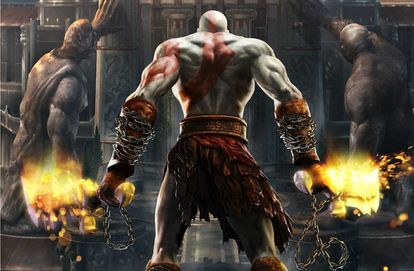

¿Que Son Los Juegos De Accion?
Es un videojuego en el que el jugador debe usar su velocidad, destreza y tiempo de reacción. Entre los diversos géneros de videojuegos, el género de acción es el más amplio y abarcativo, englobando muchos subgéneros como videojuegos de lucha, videojuegos de disparos en primera persona, beat 'em ups y videojuegos de plataformas. Muy a menudo, los videojuegos de acción usan la violencia como su principal característica de interacción, más específicamente el combate con armas de fuego o cuerpo a cuerpo.
Sus Objetivos Y La Jugabilidad
Si bien los objetivos de estos videojuegos varían de videojuego a videojuego, generalmente implican avanzar a través de niveles, eliminando hordas de enemigos y resolviendo problemas. Muchos videojuegos incluyen uno o más "jefes", a veces precedidos por "minijefes". Un minijefe es generalmente el clímax hacia un nivel o serie de niveles, con un jefe al final del juego o periódicamente por el juego, llevando a un "jefe final", el cual derrotar es el objetivo principal. Para derrotar jefes se suele usar el "reconocimiento de patrones" y la velocidad de reacción física. En la mayor parte de los videojuegos viejos (e inclusive algunos modernos) los jefes son programados con un patrón de ataques simple o con movimientos que el jugador aprende a través de la experiencia. Estos patrones simples a menudo abarcan "combos" que exigen al jugador saltar, esquivar o bloquear ataques para luego atacar en ciertos puntos claves, todo esto mientras se maneja el tiempo de los patrones para poder atacar. Muchos subgéneros, como los videojuegos de plataformas, incluyen problemas de estilo gimnástico, como por ejemplo saltos de tiempos regulados hacia y desde plataformas móviles. Los videojuegos de plataformas, ya sean en dos o tres dimensiones, son similares en concepto a la serie de videojuegos Mario Bros.. Algunos videojuegos de acción tienen una jugabilidad al estilo de los videojuegos de disparos en tercera persona, permitiéndole al jugador adquirir y (a veces) mejorar un conjunto de armas, cada una con una habilidad especial. Otro subgénero común es el shoot 'em up, en el cual el jugador controla un personaje o vehículo con muchas armas, y debe disparar a una gran cantidad de enemigos y objetos.
(Haga Click En La Imagen Para Entrar A lA Pagina Oficcial De PlayStation)
